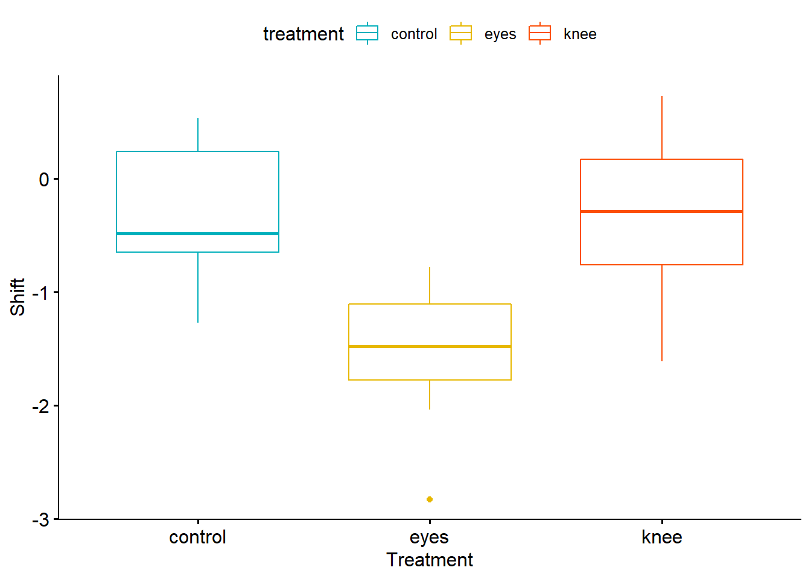
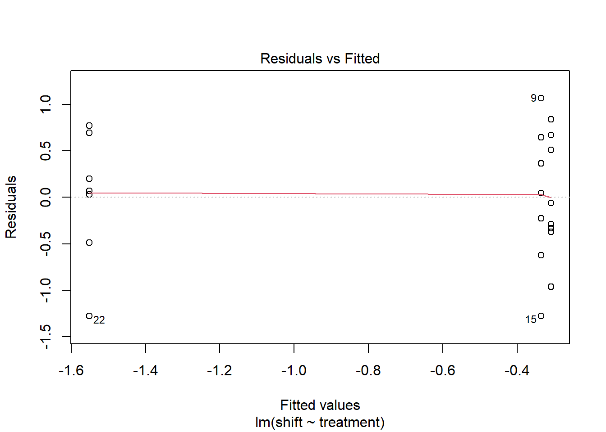
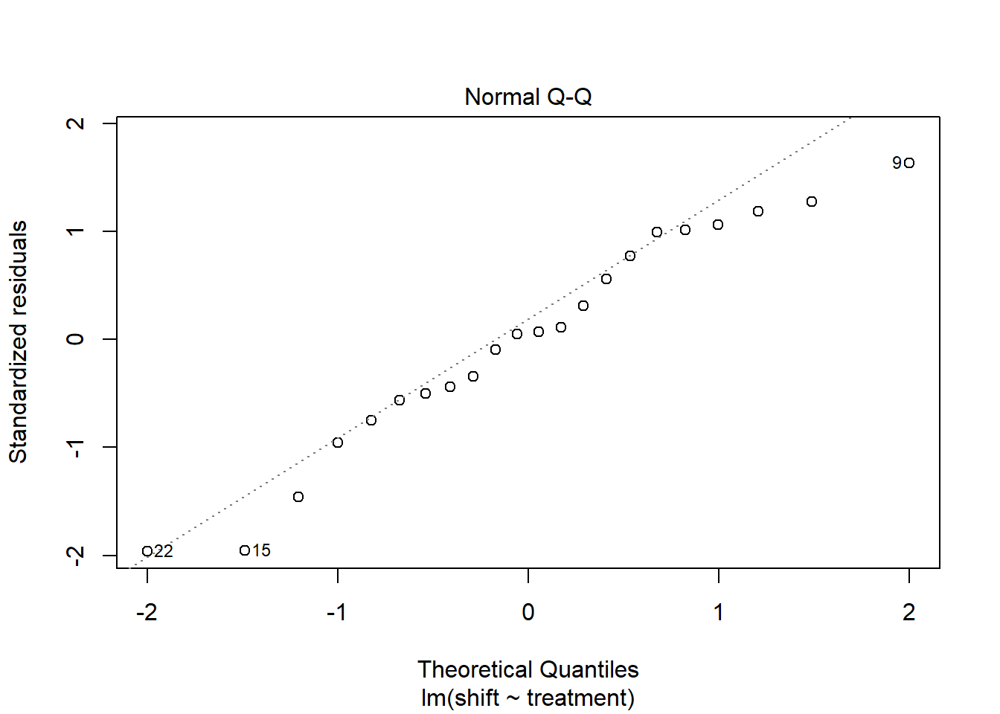
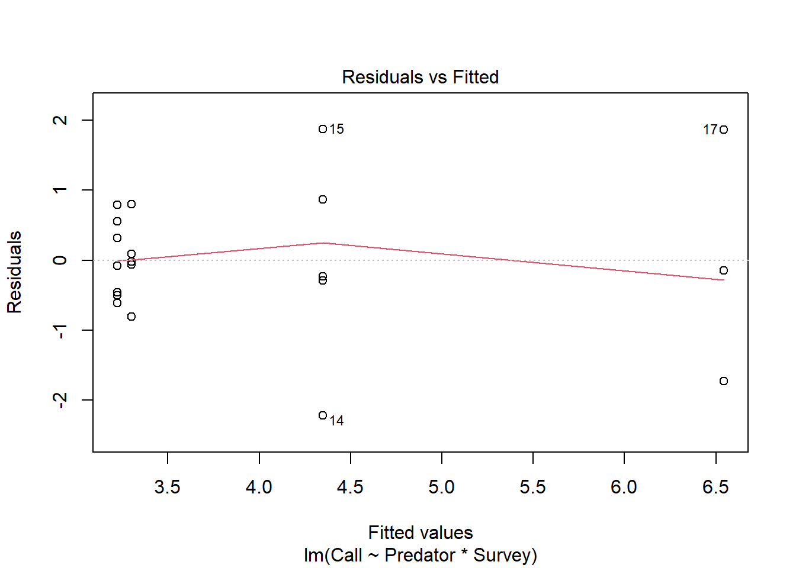
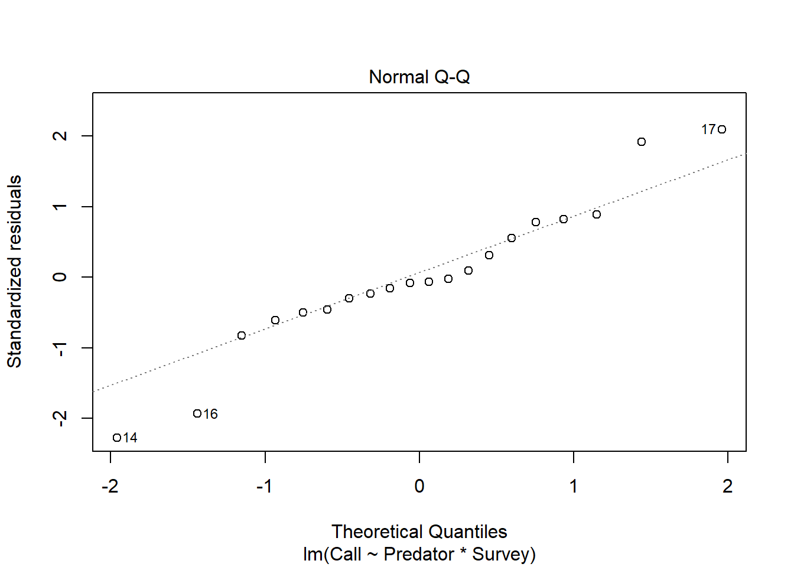
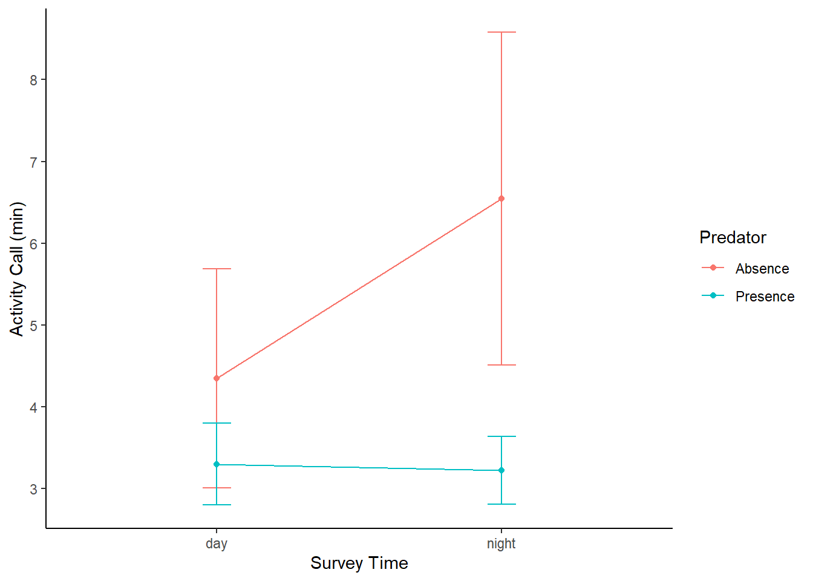

Chapter 5 Basic Statistical Analysis
ANOVA, Correlation and Regression
5.1 Analysis of Variance (ANOVA)
5.1.1 One-Way ANOVA
ANOVA is a parametric test and simply an extension of two-samples t-test. By Parametric, I mean it make assumptions regarding the shape of the population. Such assumption includes normal distribution in each factor level, commonly refers to as a “bell-shaped” curve, homogeneity (equal variance) and that the observations are independent. Basically, in your research or more broadly, statistics, you often hear or conduct one or two way ANOVA. What this means is about the factor in question (the number of predictors/explanatory/independent variables). In one-way ANOVA,you only have one independent (factor) variable and in a two-way ANOVA, you have two. We shall see examples below.
When conducting ANOVA, you need to set up hypothesis. Basically, you have either H0 (null) or HA(Alternate hypothesis). Usually, your H0 hypothesis implies there is no difference in the mean of your groups. Simply put, your observations comes from populations with the same variance (homoscedastic). HA on the other hand states there is a difference (heteroscedastic). To test for this assumption of homoscedasticity, you can use the Levene’s test (see below). N.B: if your H0 is rejected, you should not proceed with the standard ANOVA test- perhaps consider the equivalent non-parametric test (e.g., Kruskal-Wallis test)
Ideally, you should state this out explicitly, such as below:
#H0: there is no mean difference in the observation under consideration
#HA: there is a significant difference. Enough of lecture, let’s quickly demonstrate this with data
We shall be using the Circadian data. So, let’s load the data.
For quick context, the data is about jet lag and adjusting to a different time zone. Campbell and Murphy (1998) claimed people adjust to their new time zone once the light reset their internal, circadian clock. Wright and Czeisler 2002 revisited this study and measured the circadian rhythm of melatonin production. They subjected 22 people to random treatments; control, knees only and eyes. Please read more on this paper online or attached pdf (Wright and Czeisler 2002).
So for our analysis, we want to compare phase shifts in the circadian rhytm of melatonin productions in participants given another light treatments.
— Load data—
Circadian <- read.csv(file.choose()) # Load the csv named "Circadian"
# Let's check what's in our data
View(Circadian)
# or use the "dplyr" package to randomly print 10 observations
library(dplyr)
dplyr::sample_n(Circadian, 10)## treatment shift
## 1 eyes -1.52
## 2 control -0.60
## 3 knee -0.56
## 4 knee -0.29
## 5 control -1.27
## 6 control -0.64
## 7 eyes -1.35
## 8 knee 0.03
## 9 control -0.68
## 10 knee -1.61As you can see, this is a one-way factorial design. It has only one factor (the column treatment). Different treatments represents the levels in that factor and ideally are always ordered alphabetically. If you want to check the levels in your data, you can use the code below
levels(Circadian$treatment)## NULL# See it gives error right? You need to order them
Circadian$treatment = ordered(Circadian$treatment, levels = c("control","eyes", "knee"))
# Check your levels now
levels(Circadian$treatment)## [1] "control" "eyes" "knee"Before we proceed with normal ANOVA calculation, let’s play arond with codes and calculate the mean, median and standard deviation for this data.
group_by(Circadian, treatment) %>%
summarise(
count = n(),
mean = mean(shift, na.rm = TRUE),
sd = sd(shift, na.rm = TRUE)
)## # A tibble: 3 x 4
## treatment count mean sd
## <ord> <int> <dbl> <dbl>
## 1 control 8 -0.309 0.618
## 2 eyes 7 -1.55 0.706
## 3 knee 7 -0.336 0.791Also, you may want to even visualize this data and see how it looks. Let’s install a package called “ggpubr” (which is from ggplot2 and used for publications mostly, hence the name “ggpubr”)
if(!require(ggpubr)) {install.packages("ggpubr"); library(ggpubr)}
ggboxplot(Circadian, x = "treatment", y = "shift",
color = "treatment", palette = c("#00AFBB", "#E7B800", "#FC4E07"),
order = c("control", "eyes", "knee"),
ylab = "Shift", xlab = "Treatment")
Now let’s check our one-way ANOVA.
ANOVA TEST
Circadian_anova <- lm( shift ~ treatment, data=Circadian)
Circadian_anova##
## Call:
## lm(formula = shift ~ treatment, data = Circadian)
##
## Coefficients:
## (Intercept) treatment.L treatment.Q
## -0.73196 -0.01907 1.00363anova(Circadian_anova)## Analysis of Variance Table
##
## Response: shift
## Df Sum Sq Mean Sq F value Pr(>F)
## treatment 2 7.2245 3.6122 7.2894 0.004472 **
## Residuals 19 9.4153 0.4955
## ---
## Signif. codes: 0 '***' 0.001 '**' 0.01 '*' 0.05 '.' 0.1 ' ' 1Another method to calculate ANOVA using the aov function
Circadian.aov <- aov(shift ~ treatment, data = Circadian)
summary(Circadian.aov)## Df Sum Sq Mean Sq F value Pr(>F)
## treatment 2 7.224 3.612 7.289 0.00447 **
## Residuals 19 9.415 0.496
## ---
## Signif. codes: 0 '***' 0.001 '**' 0.01 '*' 0.05 '.' 0.1 ' ' 1Still the same as above, right? Good.
It is important to check all assumptions. So, we need to check all assumptions of ANOVA here now. This is important to confirm the validity of our statistical tool.
- Test for homogeneity
plot(Circadian_anova, 1)
leveneTest(shift ~ factor(treatment), data=Circadian)## Levene's Test for Homogeneity of Variance (center = median)
## Df F value Pr(>F)
## group 2 0.1586 0.8545
## 19# If you run this directly, you should get error message (unless you have installed the package containing the "levene")
#install.packages("car", dependecies=TRUE)
library(car)
#Now run your levene test
leveneTest(shift ~ factor(treatment), data=Circadian) # see that the P value is > 0.05, there is no evidence to reject the H0 (they have the same variance)## Levene's Test for Homogeneity of Variance (center = median)
## Df F value Pr(>F)
## group 2 0.1586 0.8545
## 19- Test for Normality
plot(Circadian_anova, which=2)
# This normality assumption can be further confirmed using the Shapiro normality test.
circadian_residuals <- residuals(object = Circadian_anova)
shapiro.test(circadian_residuals)##
## Shapiro-Wilk normality test
##
## data: circadian_residuals
## W = 0.95893, p-value = 0.468# From the Shapiro normality test, the P-value = 0.468, which is greater than the chosen P-value (0.05) and therefore, we have strong evidence to conclude that this data comes from a normal population, as such normality assumption is met. Lastly,
Since the ANOVA test is significant, you may want to compute the Tukey test to check for pairwise-comparison between the means of groups
# Compute the Tukey result
TukeyHSD(Circadian.aov) # Turkey will not accept anova generated from "lm" function. So use the aov here.## Tukey multiple comparisons of means
## 95% family-wise confidence level
##
## Fit: aov(formula = shift ~ treatment, data = Circadian)
##
## $treatment
## diff lwr upr p adj
## eyes-control -1.24267857 -2.1682364 -0.3171207 0.0078656
## knee-control -0.02696429 -0.9525222 0.8985936 0.9969851
## knee-eyes 1.21571429 0.2598022 2.1716263 0.0116776# You can see that both eyes-control and knee-eyes are both significant (check the p-value) Also, maybe you try the Pairwise-test (not compulsory though)
Pairwise t-test This can be used to compute pairwise comparisons between group levels with corrections for multiple testing.
pairwise.t.test(Circadian$shift, Circadian$treatment,
p.adjust.method = "BH")##
## Pairwise comparisons using t tests with pooled SD
##
## data: Circadian$shift and Circadian$treatment
##
## control eyes
## eyes 0.0066 -
## knee 0.9418 0.0066
##
## P value adjustment method: BH# The BH means that- adjust the p-values by the Benjamini-Hochberg method.For question that came up in class (about printing your output to your report using “broom” package). Let’s use this code.
Assuming we want to print our Tukey result (of course, you can do that for any output), follow the code below:
#install.packages('kableExtra')
library(kableExtra)
library(broom) # to tidy statistical models into data frames and for easy export
Tukey_output = TukeyHSD(Circadian.aov)
tidy(Tukey_output) # Tidy it## # A tibble: 3 x 7
## term contrast null.value estimate conf.low conf.high adj.p.value
## <chr> <chr> <dbl> <dbl> <dbl> <dbl> <dbl>
## 1 treatment eyes-control 0 -1.24 -2.17 -0.317 0.00787
## 2 treatment knee-control 0 -0.0270 -0.953 0.899 0.997
## 3 treatment knee-eyes 0 1.22 0.260 2.17 0.0117Tidy_tukey = tidy(Tukey_output) # save it as data frame to "kable" it out
kable(Tidy_tukey, "html") %>%
kable_styling("striped", full_width = F) %>%
add_header_above()| term | contrast | null.value | estimate | conf.low | conf.high | adj.p.value |
|---|---|---|---|---|---|---|
| treatment | eyes-control | 0 | -1.2426786 | -2.1682364 | -0.3171207 | 0.0078656 |
| treatment | knee-control | 0 | -0.0269643 | -0.9525222 | 0.8985936 | 0.9969851 |
| treatment | knee-eyes | 0 | 1.2157143 | 0.2598022 | 2.1716263 | 0.0116776 |
5.1.2 TWO-Way ANOVA
Here, let’s use fictional study, obviously, you could use your own data if you have.
Fictional Study from (Hammed Akande).
Context-
Sclerophrys perreti is an endemic species to Nigeria, reportedly lost for over 50 years and rediscovered in 2013 at its type locality. It is considered to be a vulnerable species facing an extinction risk due to several threats, including predators, among other factors. The presence of predators in the habitats of Sclerophrys perreti poses a threat to the survival of this species. In this study, the aim is to check whether Sclerophrys perreti can survive in the presence or absence of predators and assess if this can be explained by the behavior of this predator species (day or night). This experiment involves monitoring the activities of Sclerophrys perreti in the habitat for three months during the rainy season. Hypothetically, we would expect that the survival of Sclerophrys perreti depends on the abundance of predators (presence or absence) in the neighboring environment, survey time (day or night) and to investigate if there is an interaction between the predictors (predator and survey time) on the abundance of Sclerophrys perreti
Perret = read.csv(file.choose(), header = TRUE) # Load the csv file named "AkandeData"
# ANOVA TEST
Perret_anova <- lm( Call ~ Predator*Survey, data=Perret)
anova(Perret_anova)## Analysis of Variance Table
##
## Response: Call
## Df Sum Sq Mean Sq F value Pr(>F)
## Predator 1 17.6487 17.6487 14.8758 0.001395 **
## Survey 1 3.1539 3.1539 2.6584 0.122528
## Predator:Survey 1 5.8835 5.8835 4.9591 0.040664 *
## Residuals 16 18.9824 1.1864
## ---
## Signif. codes: 0 '***' 0.001 '**' 0.01 '*' 0.05 '.' 0.1 ' ' 1- Test for homogeneity
plot(Perret_anova, 1)
leveneTest(Call ~ factor(Predator) * factor(Survey), data=Perret)## Levene's Test for Homogeneity of Variance (center = median)
## Df F value Pr(>F)
## group 3 1.687 0.2098
## 16# From the result of the "levene test", given that the P-value is = 0.2098, which is greater than the chosen P-value of 0.05, we have strong evidence to accept the null hypothesis and conclude there's no evidence that all the treatment combination come from population with different variance. Therefore, the assumption of homogeneity is met. - Assessing normality
plot(Perret_anova, which=2)
# This normality assumption can be further confirmed using the Shapiro normality test.
anova_residuals <- residuals(object = Perret_anova)
shapiro.test(anova_residuals)##
## Shapiro-Wilk normality test
##
## data: anova_residuals
## W = 0.95544, p-value = 0.4573# As it can be observed from the QQ plot, most of the residuals falls on the straight line and implies that this data comes from a normally distributed population. This can be further confirmed using the Shapiro-Wilk normality test. From the Shapiro normality test, the P-value = 0.4573, which is greater than the chosen P-value (0.05) and therefore, we have strong evidence to conclude that this data comes from a normal population, as such normality assumption is met. # Interaction plot
Perret_summary <- Perret %>% group_by(Survey, Predator) %>%
summarise(y_mean = mean(Call),
y_se = psych::describe(Call)$se)## `summarise()` has grouped output by 'Survey'. You can override using the `.groups` argument.Perret_summary## # A tibble: 4 x 4
## # Groups: Survey [2]
## Survey Predator y_mean y_se
## <chr> <chr> <dbl> <dbl>
## 1 day "Absence " 4.35 0.683
## 2 day "Presence" 3.3 0.256
## 3 night "Absence " 6.54 1.04
## 4 night "Presence" 3.22 0.212Perret_summary%>%
ggplot(aes(x = Survey, y = y_mean, color = Predator)) +
geom_line(aes(group = Predator)) +
geom_point() +
geom_errorbar(aes(ymin = y_mean-1.96*y_se,
ymax = y_mean+1.96*y_se),
width = .1) +
labs(x = "Survey Time",color = "Predator", y = "Activity Call (min)") +
theme_classic() 
The end of ANOVA test.